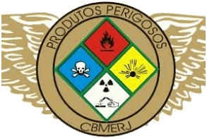

GRUPAMENTO DO CBM
Grupamento de Operações com Produtos Perigosos
Atuação com produtos perigosos na FAAAB.
Informações da unidade
Este é o portal do GOPP. As informações de seleção e cursos serão publicadas pelo próprio grupamento.
Ver estrutura do CBM ↗